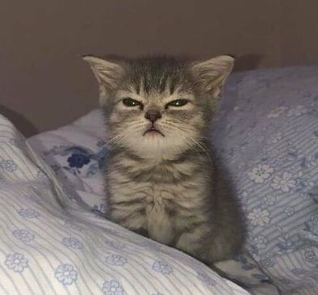

Домашнее животное – это большая ответственность для владельца. Но вместе с ответственностью приходит и развитие. Человек начинает понимать, что все вокруг не дается просто так.
Лучшее домашнее животное – это кот. Ему всего лишь месяц, он с радостью станет для Вас самым близким другом. Вы сможете делиться с ним всеми Вашими секретами, рассказывть о своих проблемах и счастливых моментах. Котик мурлычет и всегда понимает.
Поутру он любит будить, нежно стуча лапой по руке. Порой он бывает сонный и грустный но только потому что Вы его не преобрели прямо сейчас Кот – это одно из самых умных, добрых существ на этой планете.
ЦЕНА: 300$
Малыш имеет серую окраску. Носик тёмным пятном выделяется на милой мордашке. Взгляд у котёнка всегда разный. Когда хочет есть, смотрит прямо в глаза хозяина и наклоняет головку набок. Так загипнотизирует, что никто не устоит против этого беззащитного существа.
Характер у котёнка игривый, нрав весёлый. Когда увидит движущийся предмет, глазки начинают сверкать. Котёнок становится на дыбы, делает прыжок и хватает. Очень любит играть.Может даже гоняться за своим хвостом. Устанет котёнок, свернётся клубочком и может заснуть прямо на ваших ладошках.